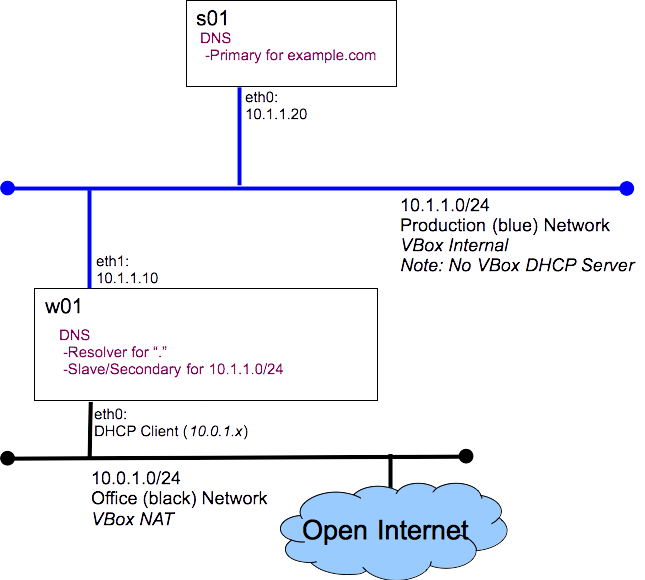

Graded Lab: DNS
Introduction
In our last lab, DNS, we configured our environment with a full-blown DNS server on ns1 resulting in a bit of a "funny" environment. Hosts on the blue network, like s01, could resolve names for servers they could not reach and we had to provide a connection to the open internet for ns1. Today you will build a DNS deployment better tailored to the needs of our lab.
Design Requirements:
- Hosts on the blue network should only have access to the blue network and not the open Internet
- All of our hosts names (s01, w01,...) should be maintained by a single DNS Primary server
- w01 needs to access the open internet and access to the internal name server
- Use bind as our name server
Implementation Strategy:
- Bind on s01:
- Primary DNS Server for the domain example.com (s01 and w01 must be in the domain)
- No caching behaviour (recursion)
- No forwarding
- Bind on w01:
Here is what we will build today

Prerequisites:
Before you start this lab you must have:
- The comp-10018 virtual lab appliance, comp-10018-vlab.ova found on the CSAIT lab systems.
- Oracle VirtualBox software, found on all lab systems at the college and available from http://virtualbox.org
Grading:
You will run the host_info_dns.sh script on s01 and w01, submitting the output files to eLearn. host_info_dns.zip
Hints:
You saw most of what you will need for this lab when you completed the first DNS lab. Here are a few hints to help you along...
- Use the excellent tutorial from zytrax: DNS For Rocket Scientists
- The s01 configuration is very similar to the configuration we built on ns1, except we do not allow recursion.
- The w01 configuration is very similar to the configuration we built on ns1, except:
- only listen on the loop-back interface
- has a zone with type slave for example.com
- limit the amount of memory we use for the DNS cache (w01 is a small system)